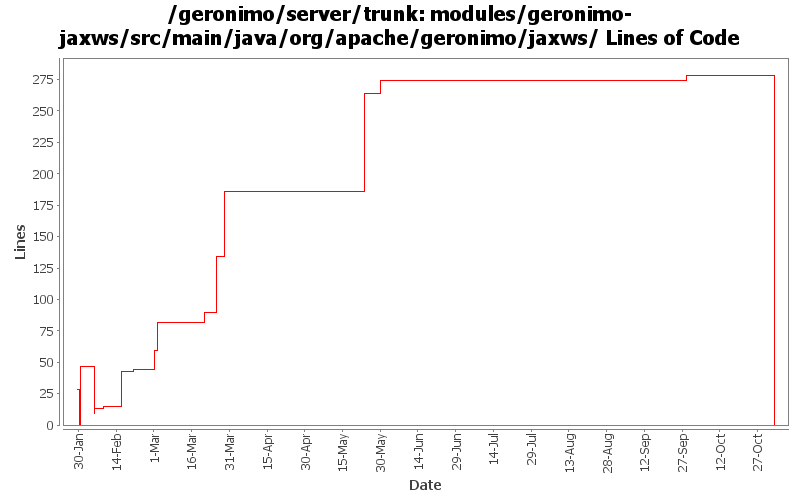

[root]/modules/geronimo-jaxws/src/main/java/org/apache/geronimo/jaxws
 annotations
(0 files, 0 lines)
annotations
(0 files, 0 lines)
 client
(0 files, 0 lines)
client
(0 files, 0 lines)

| Author | Changes | Lines of Code | Lines per Change |
|---|---|---|---|
| Totals | 38 (100.0%) | 357 (100.0%) | 9.3 |
| gawor | 4 (10.5%) | 155 (43.4%) | 38.7 |
| dims | 23 (60.5%) | 153 (42.9%) | 6.6 |
| jgenender | 2 (5.3%) | 38 (10.6%) | 19.0 |
| linsun | 1 (2.6%) | 10 (2.8%) | 10.0 |
| rickmcguire | 1 (2.6%) | 1 (0.3%) | 1.0 |
| prasad | 7 (18.4%) | 0 (0.0%) | 0.0 |
GERONIMO-3565. Modules distributed amongst framework/modules and plugins
0 lines of code changed in 7 files:
fix minor bugs discovered by FindBugs
21 lines of code changed in 1 file:
GERONIMO-3246 Cleanup exception handling so stack traces for first failures are not discarded.
1 lines of code changed in 1 file:
baaaaad attribute
1 lines of code changed in 1 file:
Fix for GERONIMO-3197 Axis2: don't call wsgen tool if BindingType is HTTP_Binding
10 lines of code changed in 1 file:
set proper service and port name
89 lines of code changed in 1 file:
Fix for GERONIMO-2977 - Axis2: process wsdlLocation annotation when wsdl-file property isn't used in webservices.xml or there isn't webservices.xml
52 lines of code changed in 1 file:
spec-compliant default endpoint address for ejb web services
44 lines of code changed in 1 file:
Get failing test to work. When trying to load HandlerChainsType, we have to use HandlerChainsDocument's Factory to parse the xml
8 lines of code changed in 1 file:
GERONIMO-2922 - ALlow deployment without web.xml
23 lines of code changed in 1 file:
GERONIMO-2908 - Deploy JAX-WS services without webservices.xml
15 lines of code changed in 1 file:
running dos2unix and set svn:eol-style native ONLY (no code changes)
1 lines of code changed in 1 file:
Fix for GERONIMO-2825 - CXF and spring version update
Fix for GERONIMO-2826 - Test case to test invocations using service-ref
Fix for GERONIMO-2830 - Updated dependencies for ejb-based tests
Fix for GERONIMO-2836 - Improvements for CXF integration
Fix for GERONIMO-2840 - Minor fixes
29 lines of code changed in 1 file:
Fix for GERONIMO-2807 - CXF: initial service-ref support
1 lines of code changed in 1 file:
Fix for GERONIMO-2807 - CXF: initial service-ref support
2 lines of code changed in 1 file:
Fix eol style
4 lines of code changed in 4 files:
Fix for GERONIMO-2796 - HandlerResolver for CXF web servies & other improvements
9 lines of code changed in 4 files:
Many Many Thanks to DJencks! - Got this working finally. All the tests in webservices-testsuite pass
47 lines of code changed in 4 files:
Roll back changes - Need to get builds working again!
0 lines of code changed in 2 files:
move the common jaxws code into a separate maven module, next step would be to fix axis2 modules to reuse the common code
0 lines of code changed in 3 files: